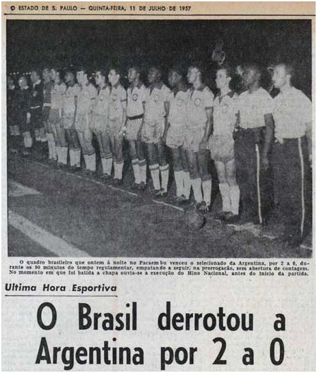
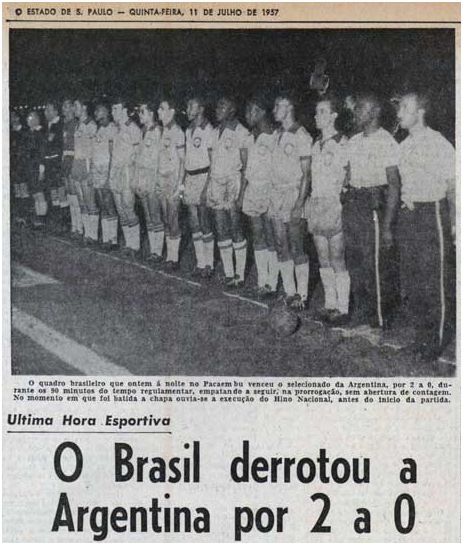

| Gols |
Santos |
Seleção BR |
Cosmos |
Seleção militar |
Seleção de SP |
Combinado Santos e Vasco |
Jogos Beneficentes |
Sindicado dos Atletas de SP |
Biografia do Pelé
Pelé
Pelé é considerado o melhor jogador de futebol de todos os tempos, é o maior artilheiro do mundo, com 1281 gols, e foi o jogador mais jovem a vencer uma Copa do Mundo.

É um ex jogador brasileiro de futebol, conhecido como "Rei Pelé", encantou o mundo com seus dribles e passes.Foi designado como embaixador mundial do futebol.Foi eleito o "Atleta do século".
levou o Santos futebol clube, Onde atuou por mais de duas décadas,A ganhar mais de 40 títulos.
É o filho de João Ramos do Nascimento,(Também ex-jogador de futebol, conhecido como Dondinho) e Celeste Arantes do Nascimento. Aos 4 anos Edson e sua familia se mudaram para Bauru em São Paulo. Naquela epoca ele "Pelé" era chamado de dico pela familia e de Edson pelos amigos Dico sempre foi fã de futebol, influenciado pelo pai começou a fazer parte de times da rua. Pelé gostava de ficar no gol por causa José lino da conceição na qual ele se inspirava.
Titulos de Pelé
Santos

Em 1956, Pelé chegou ao Santos como promessa de Waldemar de Brito, que, de acordo com informações do site oficial do Santos, afirmou ao clube: “Esse menino vai ser o melhor jogador de futebol do mundo!”. Passado um mês de sua chegada ao clube, o jovem fez sua primeira partida na equipe profissional. O jogo foi contra o Corinthians de Santo André, e o Santos venceu por 7 a 1.
Pelé entrou no segundo tempo de partida e marcou o sexto gol. Pelé começou a ser reconhecido nacionalmente ainda com 16 anos de idade. Em 1957, o garoto já era titular do Santos e foi artilheiro do Campeonato Paulista, o mais jovem até hoje, marcando 36 gols. O Rei do Futebol atuou durante quase toda sua carreira no Santos, entre 1956 a 1974.
No período, ele levou o clube a conquistar dez títulos estaduais e seis campeonatos nacionais (Taça Brasil e Torneio Robertão), além de duas Copas Libertadores e dois Mundiais de Clubes, em 1962 e 1963.No período, ele levou o clube a conquistar dez títulos estaduais e seis campeonatos nacionais (Taça Brasil e Torneio Robertão), além de duas Copas Libertadores e dois Mundiais de Clubes, em 1962 e 1963.
Na Libertadores, na época ainda conhecida como Copa Campeões da América, o Santos, com uma das melhores equipes de todos os tempos, conhecida como Balé Branco e liderada por Pelé, atraiu a atenção internacional para o torneio. Em 1962, a equipe venceu o então bicampeão Peñarol, do Uruguai, na final e foi o primeiro time brasileiro a garantir o título na competição. Já em 1963, Pelé contou com o apoio de Coutinho para vencer o torneio de novo, mas, dessa vez, em cima do Boca Juniors, da Argentina.
Também no Santos, em 1969, Pelé marcou seu milésimo gol. O feito ocorreu em uma partida contra o Vasco, no Maracanã, e foi realizado em uma cobrança de pênalti.
- Campeonato brasileiro serie A:1961, 1962, 1963, 1964, 1965, 1968
- Supercopa Sul-Americana: 1968
- Copa Libertadores da América: 1962, 1963
- Copa Intercontinental: 1962, 1963
- Recopa dos Campeões Intercontinentais :1968
- Campeonato Paulista de Futebol: 1958, 1960, 1961, 1962, 1964, 1965, 1967, 1968, 1969, 1973
- Torneio Rio–São Paulo: 1959, 1963, 1964
New York Cosmos
North American Soccer League : 1977
Seleção Brasileira
Copa do Mundo FIFA: 1958, 1962, 1970
 Taça do Atlântico: 1960
Copa Roca: 1957, 1963

Taça Oswaldo Cruz: 1958, 1962, 1968
Taça Bernardo O'Higgins: 1959
Taça do Atlântico: 1960
Copa Roca: 1957, 1963

Taça Oswaldo Cruz: 1958, 1962, 1968
Taça Bernardo O'Higgins: 1959

Em dezembro de 2000 Pelé e Diego Maradona dividiram o prêmio de Melhor Jogador do Século da FIFA.Originalmente, o prêmio pretendia basear-se em votos em uma pesquisa na internet, mas muitos observadores reclamaram que a natureza da pesquisa teria significado uma demografia distorcida de fãs mais jovens que teriam visto Maradona jogar, mas não Pelé.Mais os votos foram para o Pelé por unanimidade, porem os 2 decidiram dividir o premio.
Artilheiro da Copa Libertadores da América: 1965
Artilheiro da Copa Intercontinental: 1962, 1963
Artilheiro do Campeonato Brasileiro Série A: 1961, 1963, 1964
Artilheiro do Campeonato Paulista de Futebol: 1957, 1958, 1959, 1960,
1961, 1962, 1963, 1964, 1965, 1969, 1973
Artilheiro do Torneio Rio-São Paulo: 1963
Bola de Prata: 1970
Melhor jogador jovem da Copa do Mundo FIFA: 1958
Bola de Prata da Copa do Mundo FIFA: 1958
Bola de Ouro da Copa do Mundo FIFA (Melhor Jogador): 1970
Melhor Jogador da Copa América: 1959
Artilheiro da Copa América: 1959
FIFA Ballon d'Or: 2013
Jogador do Século da IFFHS: 1999
Jogador Sul-Americano do Século da IFFHS: 1999
Eleito Melhor Jogador Brasileiro do Século pela IFFHS: 2006
Ballon d'Or da France Football: 1958, 1959, 1960, 1961, 1963, 1964, 1970
Melhor Jogador do Século da FIFA: 2000,
Ordem de Mérito da FIFA: 1984
Prêmio do Centenário da FIFA: 2004
FIFA 100 Melhores Futebolistas Vivos: 2004
Top-100 Jogadores de Copas do Mundo 1930–1990 da France Football
Personalidade do esporte no exterior da BBC: 1970
Prêmio personalidade do esporte no exterior da BBC Lifetime Achievement: 2005
Prêmio personalidade do esporte no exterior da BBC Lifetime Achievement: 2005
Prêmio Laureus do Esporte Mundial: 2000
Melhor futebolista que já jogou da Golden Foot: 2012
Atleta do Século da Reuters: 1999>
Eleito Atleta do Século pelo Comitê Olímpico Internacional: 1999
Futebolista Sul-Americano do Ano: 1973
Eleito Futebolista do Século pelos ganhadores da Ballon d'Or da France Football: 1999
Incluído no National Soccer Hall of Fame: 1992
Seleção de Futebol do Século XX: 1998
TIME: uma das cem pessoas mais importantes do século XX: 1999
Melhores Onze de Todos os Tempos da World Soccer: 2013
Incluído no time de estrelas da North American Soccer League (NASL): 1975, 1976, 1977
Número 10 aposentado pelo New York Cosmos como reconhecimento pela sua contribuição ao clube: 1977
Eleito Cidadão do Mundo pela ONU: 1977
Eleito Cidadão do Mundo pela ONU: 1977
Eleito Cidadão do Mundo pela ONU: 1977
11Leyendas Jornal AS: 2021
IFFHS ALL TIME WORLD MEN'S DREAM TEAM
Recordes pessoais
Seleção Brasileira de Futebol: artilheiro: 77 gols (95 se incluso jogos não oficiais)
Santos:artilheiro: 643 gols em 656 partidas
Sul-americano com mais gols pela seleção nacional no século XX: 77 gols
Copa Intercontinental: artilheiro: 7 gols
Maior número de hat-tricks: 92
Guinness World Records: Jogador com mais gols (futebol): 1281 gols em 1363 partidas
Guinness World Records: Jogador com mais Copas do Mundo vencidas: três
Guinness World Records: Mais jovem vencedor de uma Copa do Mundo: 17 anos e 249 dias na Copa do Mundo FIFA de 1958[
Jogador mais jovem a marcar um gol em Copa do Mundo: 17 anos e 239 dias (Brasil v País de Gales, 1958)
Mais jovem jogador a efetuar um hat-trick em Copa do Mundo: 17 anos e 244 dias (Brasil v França, 1958)
Mais jovem jogador a participar de uma final de Copa do Mundo: 17 anos e 249 dias (Brasil v Suécia, 1958)final de Copa do Mundo: 17 anos e 249 dias (Brasil v Suécia, 1958)
Jogador com mais assistências dadas em Copas do Mundo: 10, (1958–1970
Mais assistências em uma única edição de Copa do Mundo: 7, (1970)
Mais assistências dadas em uma final de Copa do Mundo: 3, (1958 e 1970)
Mais gols em uma Final de Copa do Mundo (junto de Vavá, Geoff Hurst e Zinédine Zidane): 3 gols
Único jogador, com Uwe Seeler, Miroslav Klose e Cristiano Ronaldo, a marcar em quatro edições consecutivas de Copas do Mundo (1958-1962-1966-1970)
Mais jovem artilheiro de um Campeonato Paulista: 1957 – Santos
Mais jovem vencedor de Copa do Mundo: 1958 – Brasil (17 anos)
Mais jovem bicampeão de Copa do Mundo: 1962 – Brasil (21 anos)
Mais gols em uma única temporada: 1959 – 127 gols
Aposentadoria
Pelé aposentou-se do futebol no ano de 1977, quando jogava no Cosmos. Em 1994 foi nomeado Embaixador da Boa Vontade da UNESCO. Em 1995 foi nomeado Ministro do Esporte no governo de Fernando Henrique Cardoso, cargo que exerceu até 1998.
Durante esse período, Pelé criou uma lei que, entre outras medidas, visava dar maior transparência e profissionalismo ao esporte, que ficou conhecida como “Lei Pelé”.
Vida Pessoal
Pelé foi casado com Rosemeri dos Reis Cholbi entre 1966 e 1980. O casal teve três filhos: Kelly Cristina, Jennifer e Edinho, que também se tornou jogador de futebol.
Em 1990 começou o namoro com Assíria Nascimento, com quem se casou em 1994 e tiveram filhos gêmeos, Joshua e Celeste. O casal se separou em 2008.
Em 2016 casou-se com a empresária Márcia Cibele Aoki, com quem namorava desde 2010.
O jogador teve duas filhas fora do casamento, Sandra Regina Machado, que faleceu em 2006, e Flávia Kutz. Ambas só conseguiram reconhecimento da paternidade através dos tribunais.
Saúde
Em 2012 Pelé se submeteu a uma cirurgia nos Quadris. Passou ainda por mais duas cirurgias, uma em 2015 e outra em 2017. Com dificuldades para andar, passou a se locomover em uma cadeira de rodas.
Em 2018, esteve em Moscou para o sorteio da Copa do Mundo da Rússia, quando foi fotografado ao lado de Vladimir Putin e Diego Maradona.
No dia 2 de abril de 2019, depois de se encontrar com Mbappé, jogador do PSG, Pelé foi internado em um hospital em Paris. Ao receber alta, Pelé retornou ao Brasil e foi internado no hospital Albert Einstein, em São Paulo, com infeção urinária.
Recuperado, e morando no Guarujá, litoral de São Paulo, Pelé segue a quarentena por causa do coronavírus.
80 anos de vida
No dia 23 de outubro de 2020, ao completar 80 anos, Pelé declarou:
“Agradeço a todos os que me mandaram cumprimentos. Agradeço a Deus pela saúde de chegar aqui lúcido. Em todos os lugares do mundo em que chego sou bem recebido, as portas sempre estão abertas no mundo todo. Espero que, quando chegar ao céu, Deus me receba da mesma maneira que todos me recebem hoje graças ao nosso querido futebol”.